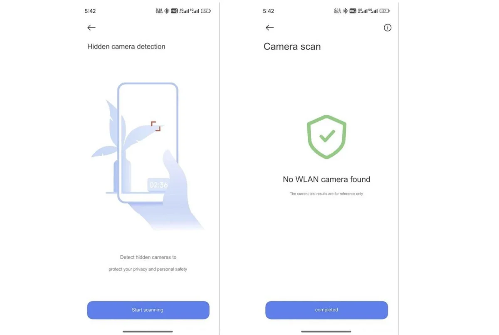

Xiaomi telefonlara yeni özellik: Gizli kameraları tespit edebilecek
Xiaomi HyperOS 2.0 güncellemesiyle yeni bir özellik kullanıma sunuyor. Telefonlar, ağ taraması ile gizli kameraları bulacak.

Xiaomi'nin, HyperOS 2.0 güncellemesiyle birlikte yeni bir özellik kullanma sunacağı ortaya çıktı. Telefonlara gelecek gizli kamera tespit özelliği, kullanıcıların güvenliğini önemli ölçüde artıran bir yenilik olacak. Bu özellik sayesinde Xiaomi kullanıcıları, bulunduğu ortamda gizlice yerleştirilmiş olabilecek kameraları tespit edebilecek.
YENİ ÖZELLİK NASIL ÇALIŞACAK
Yeni güncelleme ile birlikte telefonlar, bağlı oldukları Wi-Fi ağını tarayacak ve gizli kamera olmasından şüphelendiği cihazları listeleyecek. Gizli kamera algılama özelliğine ilişkin paylaşılan ekran görüntülerinde, “Gizliliğinizi ve kişisel güvenliğinizi korumak için gizli kameraları tespit edin." mesajı yer alıyor. Gizli kamera algılama özelliğini de getirecek HyperOS 2.0 güncellemesinin ekim ayında sunulması bekleniyor.
Unutmayın, bu özellik tüm gizli kameraları tespit etme garantisi vermiyor. Bazı kameralar, tespit edilmek üzere tasarlanmadığı için bu özelliği atlatabilir. Ayrıca, tamamen masum cihazları da şüpheli olarak işaretleyebileceği durumlar olabilir. Sonuç olarak, Xiaomi'nin gizli kamera tespit özelliği, kullanıcıların güvenliği için önemli bir adım. Ancak, bu özelliğin tek başına yeterli olmadığını ve ek önlemler almanız gerektiğini de unutmayın.